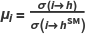
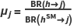
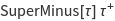
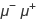
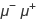
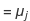
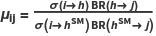

Higgs Boson data
The implementation of the Higgs boson data within the SpaceMath code , was closely following the reference : arXiv:1809.10733v2[hep-ex], 10.1140/epjc/s10052-019-6909-y.
For a production process and a decay  , the signal strength is defined as
, the signal strength is defined as
 and .
respectively, where σ(i h) and BR(hj) are the Higgs boson production cross section and the
branching ratio of the Higgs boson decaying into j-channel, here i=ggh, VBF, Wh,
Zh, tth and j =bb̄,  ,  , , γγ, gg,  ▪ In the special case when
, , γγ, gg,  ▪ In the special case when
 =1, the SM is recovered. Because σ and BR cannot be independently mea-
sured without additional assumptions and only the product · can be extracted
experimentally, the signal strength can be denied as follows:
.
In this version of SpaceMath we only consider the Higgs boson production cross
section via gluon fusion and we use the narrow width approximation